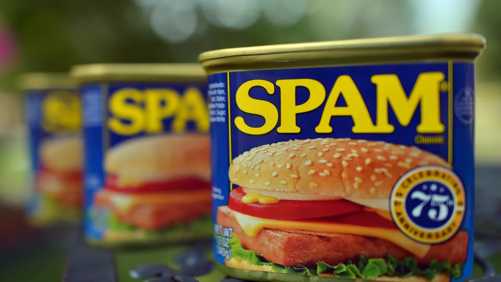
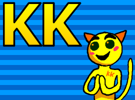
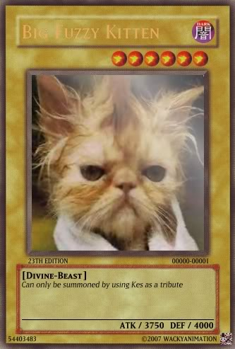
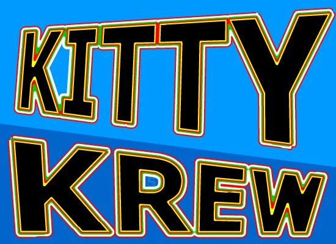
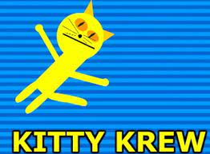

flash group with the
most selective spam
history
2006
On July 17, 3 people released a colab animation that they spent very little time on, they were BigfuzzyKitten, Seel and Lasse, and the rest of the people followed them doing something similar, so the kittykrew spam group appeared, all they did was invite others to their projects people in order for these videos to pass the content check on the newgrounds site, they had to put a KK intro to the rules, there were several of them, but most often they put in an intro that would be in the "files", animations from their users came out every day, but by the end of 2006 they began to attack other spam groups, it is known that there was an attack on Star Syndicate, Socom Squad, and Uzi Union, and they almost broke up
2007 - 2009
2007 started with the restoration of the group and the beginning of new wars, some wars were repeated with some previous teams, almost nothing happened, but accounts began to be hacked, and in 2009 the group broke up, also BFK decided to leave and that was the final blow to the group

2010 - 2013
further in the team, the administrators kicked out a lot of important people from the team who were still there from the beginning of the group, this caused a riot, BFK left the animation preloaders and left, animations began to appear actively again and by the end of 2013 there was almost no one, the old participants say that it was and for the fact that they were tired or they grew up, because before, almost everyone was there for 14 years (2009) and then there was no time and energy to deal with nonsense

2015 - 2019
at that moment, about 2 animations came out and in the main account there were top posts about the fact that the team is gaining strength, their forum was remade and had a message with an answer to some questions from an anonymous person, in 2017 a server appeared that is now used as a KK server, and in 2019 announced the complete death of the group

2022 - 2023
in 2022, one of the popular members of group 321 offered to return the group and some people agreed, and about 10 old members returned and new ones appeared, only one of them was doing not bad spam then, it was neo kitty(anonymousefrog)(anonus), and he and led most of the negotiations, by the end of 2022 it turned out that he was a pedophile and he was kicked out of the group and what happened to him then is unknown, after which the rules of good spam appeared, and by the beginning of 2023 neo kitty was kicked out of the confusion with the fact that abortkitty thought that he is 321, after which he tried to return his mtv kitty but failed, he posted his last name and left the group, after which now the group says that they are dead and do not want revivals

from the creator
I talked to some of the departed and other people, and this is what I can say from myself, mtv kitty left due to inactivity in animations, neo kitty (anonus) according to many people is a terrible person, and he is often used to make him something did for them, 321 pedophiles, I originally wanted to add more about the story but aborted kitty(fetus) said that there is no need to revive the group, but this is just to answer many questions and the last thing people do is write it all down on Wikipedia and this is a source of information , also kitty krew when Ipsugal appeared all newgrounds (2022), but MTV said that he didn’t even know about it and found out through roomba clock, at the moment this is an old school group, you can enter it but you won’t find anything for yourself there, just be an ordinary person
create by @greateday